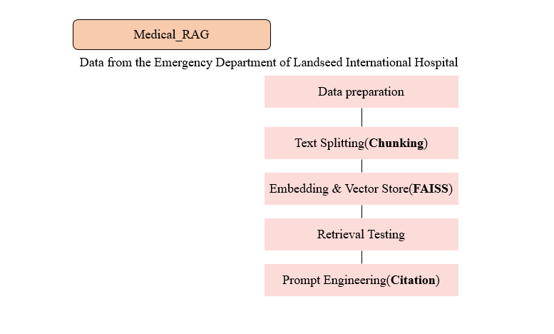
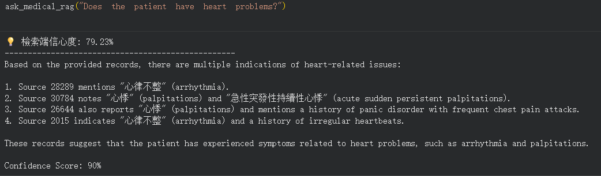
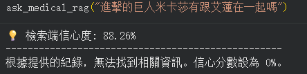

LangChain-Based RAG System for Emergency Department Medical Records
Side Project
Project Overview
- 建構針對急診病歷的 Retrieval-Augmented Generation (RAG) 查詢系統
- 處理 50,000+ 筆非結構化臨床病歷，轉換為語義向量嵌入
- 結合 FAISS 向量資料庫與 LLM(gpt-4o)，使模型回覆有依據地根植於檢索的病歷內容

LLMworkflow：整體 RAG 系統流程，從病歷輸入至 LLM 生成回覆
System Architecture
Medical Records
↓
Text Preprocessing
↓
Chunking
↓
MiniLM Embedding
↓
FAISS Vector DB
↓
Retriever
↓
Prompt Template
↓
LLM
↓
Answer
Technical Stack
Python
LangChain
MiniLM Embedding Model
FAISS Vector Database
Prompt Engineering
Colab
OpenAI API
Demo
User Query
"病人是否有意識不清的情況?"
LLM Response
💡 檢索端信心度: 82.68%
--------------------------------------------------
根據提供的紀錄，病人有意識不清的情況。以下是相關的來源：
1. 在 [Source: 6892] 中，病人被描述為「意識程度改變,無意識(GCS 3 ~ 8)」，這表明病人有嚴重的意識不清。
2. 在 [Source: 48560] 中，病人被描述為「反應緩慢」和「drowsiness (+)」，這也顯示出意識不清的情況。
3. 在 [Source: 21123] 中，病人被描述為「意識程度改變(GCS 9 ~ 13)」和「conscious drowsy」，這同樣顯示出意識不清的情況。
4. 在 [Source: 8831] 中，病人被描述為「意識程度改變(GCS 9 ~ 13)」和「conscious partial recover in ED」，這也顯示出意識不清的情況。
綜合信心分數：100%。
＊ 以上為實際結果範例
圖示（Figures）

Demo 成果截圖( 成功檢索並摘要 )

Demo 成果截圖( 模型抑制文章中未出現的幻覺資訊 )
返回主頁